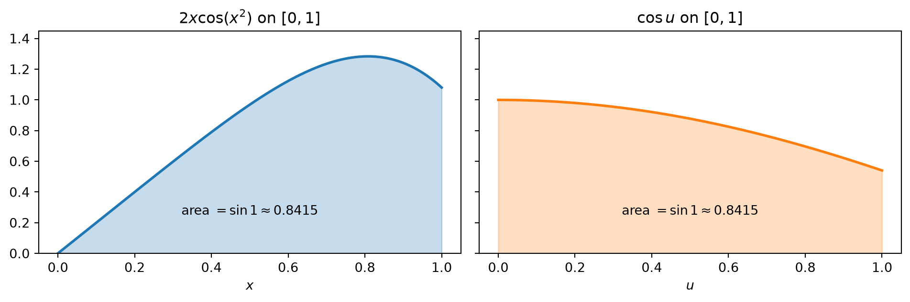
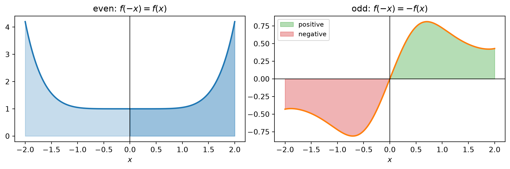

flowchart LR A["Chain Rule<br/>[F(g(x))]' = f(g(x)) g'(x)"] --> B["Indefinite substitution<br/>integral of f(g(x)) g'(x) dx = integral of f(u) du"] B --> C["Definite substitution<br/>limits a, b become g(a), g(b)"] C --> D["Symmetry<br/>even: double half, odd: zero"] B --> E["Choosing u<br/>inner function, back-substitution,<br/>rewrite first, hidden structure"]
Integrals: The Substitution Rule
The Chain Rule, read backwards
The Fundamental Theorem of Calculus reduces integration to finding antiderivatives, so every differentiation rule gives an integration rule when read backwards. The Substitution Rule is the backward reading of the Chain Rule. It is the first integration technique to learn, and many later techniques reduce an integral to a form where it can be applied.
1 The Rule
1.1 Where it comes from
Let \(F\) be an antiderivative of \(f\), so \(F' = f\). By the Chain Rule, \[ \frac{d}{dx}\,F(g(x)) = F'(g(x))\,g'(x) = f(g(x))\,g'(x). \] Reading this as a statement about antiderivatives, \[ \int f(g(x))\,g'(x)\,dx = F(g(x)) + C. \] If we write \(u = g(x)\), the right side is \(F(u) + C = \int f(u)\,du\).
NoteThe Substitution Rule (indefinite form)
If \(u = g(x)\) is differentiable, its range is an interval \(I\), and \(f\) is continuous on \(I\), then \[ \int f(g(x))\,g'(x)\,dx = \int f(u)\,du. \]
1.2 Reading \(du = g'(x)\,dx\)
Since \(u = g(x)\) gives \(du = g'(x)\,dx\), the rule says we may treat \(dx\) and \(du\) after an integral sign as if they were differentials. The bookkeeping
\[ u = g(x), \qquad du = g'(x)\,dx \]
is a memory device. What makes it legitimate is the Chain Rule computation above, not any meaning of \(dx\) on its own.
1.3 A first example
To evaluate \(\int x^3\cos(x^4+2)\,dx\), let \(u = x^4 + 2\). Then \(du = 4x^3\,dx\), and the integrand contains \(x^3\,dx = \tfrac14\,du\). Only a constant factor is missing. \[ \int x^3\cos(x^4+2)\,dx = \frac14\int \cos u\,du = \frac14\sin(x^4+2) + C. \]
A second standard example produces a formula worth remembering. Writing \(\tan x = \sin x/\cos x\) and letting \(u = \cos x\), so that \(\sin x\,dx = -du\), \[ \int \tan x\,dx = -\int \frac{1}{u}\,du = -\ln|\cos x| + C = \ln|\sec x| + C. \] The last step uses \(-\ln|\cos x| = \ln\left(|\cos x|^{-1}\right)\).
2 Choosing \(u\)
The rule only applies once the integrand has the shape \(f(g(x))\,g'(x)\). Most of the work is in seeing that shape. Four patterns cover most cases.
| Pattern | What to look for | Example |
|---|---|---|
| Inner function | A composite whose inner derivative appears as a factor (up to a constant) | \(\int x\sin(x^2)\,dx\), \(u = x^2\) |
| Back-substitution | The inner derivative is missing, but \(x\) can be solved for in terms of \(u\) | \(\int x^2\sqrt{2+x}\,dx\), \(u = 2+x\), \(x = u-2\) |
| Rewrite first | An identity exposes the derivative | \(\int \dfrac{\sin 2x}{1+\cos^2 x}\,dx\), use \(\sin 2x = 2\sin x\cos x\) |
| Hidden structure | A piece inside an expression, not the whole expression | \(\int \dfrac{x}{1+x^4}\,dx\), \(u = x^2\) |
2.1 Back-substitution
When \(du\) does not appear in the integrand, stop looking for it. Instead, solve \(u = g(x)\) for \(x\) and replace everything, including \(dx\).
With \(u = 2 + x\), we have \(x = u - 2\) and \(dx = du\): \[ \int x^2\sqrt{2+x}\,dx = \int (u-2)^2 u^{1/2}\,du = \int \left(u^{5/2} - 4u^{3/2} + 4u^{1/2}\right)du. \] Each term is a power of \(u\): \[ = \frac27(2+x)^{7/2} - \frac85(2+x)^{5/2} + \frac83(2+x)^{3/2} + C = \frac{2}{105}(2+x)^{3/2}\left(15x^2 - 24x + 32\right) + C. \]
The alternative \(u = \sqrt{2+x}\) also works: \(x = u^2 - 2\) and \(dx = 2u\,du\) remove the root entirely and leave a polynomial in \(u\).
2.2 Rewrite first
\(\int \dfrac{\sin 2x}{1+\cos^2 x}\,dx\) has no visible derivative of \(1+\cos^2 x\) until \(\sin 2x\) is rewritten. With \(u = 1+\cos^2 x\), \[ du = 2\cos x\cdot(-\sin x)\,dx = -\sin 2x\,dx, \] so \[ \int \frac{\sin 2x}{1+\cos^2 x}\,dx = -\int\frac{du}{u} = -\ln(1+\cos^2 x) + C. \] The absolute value can be dropped because \(1+\cos^2 x \ge 1 > 0\). The minus sign comes from the inner derivative of \(\cos x\), and it is the easiest thing to lose here.
3 Definite Integrals
3.1 Two methods
There are two ways to evaluate a definite integral by substitution.
- Antiderivative first. Find the indefinite integral in terms of \(x\), then apply the Evaluation Theorem with the original limits.
- Change the limits. Convert the limits to \(u\)-values when the variable is changed, and never return to \(x\). This is usually preferable.
For \(\int_0^4\sqrt{2x+1}\,dx\), method 1 gives \[ \left[\tfrac13(2x+1)^{3/2}\right]_0^4 = \tfrac13(27 - 1) = \tfrac{26}{3}. \] Method 2, with \(u = 2x+1\), sends \(x = 0 \mapsto u = 1\) and \(x = 4 \mapsto u = 9\): \[ \frac12\int_1^9 u^{1/2}\,du = \frac13\left[u^{3/2}\right]_1^9 = \frac{26}{3}. \]
NoteThe Substitution Rule for definite integrals
If \(g'\) is continuous on \([a,b]\) and \(f\) is continuous on the range of \(u = g(x)\), then \[ \int_a^b f(g(x))\,g'(x)\,dx = \int_{g(a)}^{g(b)} f(u)\,du. \]
The reason is short: by FTC both sides equal \(F(g(b)) - F(g(a))\). The rule does not require \(g\) to be increasing. If \(g(a) > g(b)\), the new limits simply come out in reverse order, and the formula still holds.
3.2 Picture: the area is preserved, the shape is not
Substitution changes the horizontal variable, so the region changes shape, but the area stays the same. Below, \(\int_0^{1} 2x\cos(x^2)\,dx\) and \(\int_0^{1}\cos u\,du\) have the same value \(\sin 1\).

3.3 Worked examples
A logarithm inside. For \(\int_1^e \dfrac{\ln x}{x}\,dx\), let \(u = \ln x\), so \(du = dx/x\). The limits become \(u = 0\) and \(u = 1\): \[ \int_1^e \frac{\ln x}{x}\,dx = \int_0^1 u\,du = \frac12. \]
Back-substitution with new limits. For \(\int_0^1 \dfrac{dx}{(1+\sqrt{x})^4}\), let \(u = 1+\sqrt{x}\). Then \(\sqrt{x} = u - 1\), so \(dx = 2\sqrt{x}\,du = 2(u-1)\,du\), and the limits become \(u = 1\) and \(u = 2\): \[ \int_1^2 \frac{2(u-1)}{u^4}\,du = \int_1^2 \left(2u^{-3} - 2u^{-4}\right)du = \left[-u^{-2} + \tfrac23 u^{-3}\right]_1^2 = \frac34 - \frac{7}{12} = \frac16. \]
A Rayleigh distribution function. The Rayleigh density \(f_R(x) = \dfrac{x}{\sigma^2}e^{-x^2/(2\sigma^2)}\), \(x \ge 0\), models the envelope of a fading channel. With \(u = x^2/(2\sigma^2)\), \(du = (x/\sigma^2)\,dx\), and \[ F_R(r) = \int_0^r \frac{x}{\sigma^2}e^{-x^2/(2\sigma^2)}\,dx = \int_0^{r^2/(2\sigma^2)} e^{-u}\,du = 1 - e^{-r^2/(2\sigma^2)}. \] The factor \(x\) in front is exactly \(g'(x)\) up to a constant. The Gaussian density \(e^{-x^2/2}\) lacks that factor, which is why the Gaussian distribution function (and the \(Q\)-function) has no elementary closed form.
3.4 Unknown \(f\): substitution as a structural tool
The rule works even when \(f\) is not known explicitly. Suppose \(f\) is continuous and \(\int_0^9 f(x)\,dx = 4\). To find \(\int_0^3 x f(x^2)\,dx\), let \(u = x^2\), \(du = 2x\,dx\), with limits \(0 \mapsto 0\) and \(3 \mapsto 9\): \[ \int_0^3 x f(x^2)\,dx = \frac12\int_0^9 f(u)\,du = \frac12\cdot 4 = 2. \] The choice of \(u\) is the input of \(f\), not \(f\) itself.
4 Symmetry
NoteIntegrals of symmetric functions
Suppose \(f\) is continuous on \([-a, a]\).
If \(f\) is even, \(f(-x) = f(x)\), then \(\displaystyle\int_{-a}^{a} f(x)\,dx = 2\int_0^a f(x)\,dx\).
If \(f\) is odd, \(f(-x) = -f(x)\), then \(\displaystyle\int_{-a}^{a} f(x)\,dx = 0\).
Why. Split the interval at \(0\): \[ \int_{-a}^{a} f(x)\,dx = \int_{-a}^{0} f(x)\,dx + \int_0^a f(x)\,dx = -\int_0^{-a} f(x)\,dx + \int_0^a f(x)\,dx. \] In the first integral on the right, let \(u = -x\), so \(du = -dx\) and \(x = -a \mapsto u = a\): \[ -\int_0^{-a} f(x)\,dx = -\int_0^a f(-u)(-du) = \int_0^a f(-u)\,du. \] Therefore \[ \int_{-a}^{a} f(x)\,dx = \int_0^a f(-u)\,du + \int_0^a f(x)\,dx. \] If \(f\) is even, the two integrals on the right are equal, giving (a). If \(f\) is odd, the first is the negative of the second, giving (b).

Two quick uses: \[ \int_{-2}^{2}(x^6 + 1)\,dx = 2\int_0^2 (x^6+1)\,dx = 2\left[\tfrac17 x^7 + x\right]_0^2 = \frac{284}{7}, \qquad \int_{-1}^{1}\frac{\tan x}{1+x^2+x^4}\,dx = 0. \] The second integral has no convenient antiderivative, yet its value is immediate. Checking for symmetry before computing can save the whole calculation.
5 Common Pitfalls
- Losing the sign of an inner derivative. \(\dfrac{d}{dx}\cos x = -\sin x\), so \(u = 1+\cos^2 x\) gives \(du = -\sin 2x\,dx\), not \(+\sin 2x\,dx\). The same applies to \(u = \cos x\), \(u = a - x\), and \(u = e^{-x}\).
- Hunting for \(du\) when it is not there. If \(g'(x)\) is missing from the integrand, switch to back-substitution: solve for \(x\) in terms of \(u\) and replace \(dx\) as well.
- Choosing the largest expression as \(u\). In \(\int \dfrac{x}{1+x^4}\,dx\), \(u = 1+x^4\) fails while \(u = x^2\) works. Choose \(u\) by the target form.
- Mixing variables. After substituting, the integrand must contain only \(u\). A leftover \(x\) means the substitution is incomplete.
- Forgetting to change the limits. In a definite integral, either convert the limits to \(u\)-values or return to \(x\) before evaluating. Never use \(x\)-limits with a \(u\)-antiderivative.
- Dropping \(du\) and \(+C\). Writing \(\int (u^{5/2} - 4u^{3/2})\) without \(du\) hides which variable is being integrated. An indefinite integral always needs \(+C\).
6 Self-Check Toolkit
- Differentiate the answer. For an indefinite integral, the derivative of the result must reproduce the integrand exactly, including the sign and the constant factor. This catches almost every substitution error.
- Sign and size of a definite integral. If the integrand is positive on the interval, the value must be positive. Bound it by (length of interval) \(\times\) (maximum of integrand). For \(\int_0^1 (1+\sqrt{x})^{-4}\,dx\), the integrand lies between \(\tfrac1{16}\) and \(1\), so the value must lie in \(\left[\tfrac{1}{16}, 1\right]\); \(\tfrac16\) passes.
- Compute both ways. For a definite integral, change the limits once and use the antiderivative-first method once. The two results must agree.
- Look for symmetry first. On a symmetric interval \([-a,a]\), test \(f(-x)\) before doing any algebra.